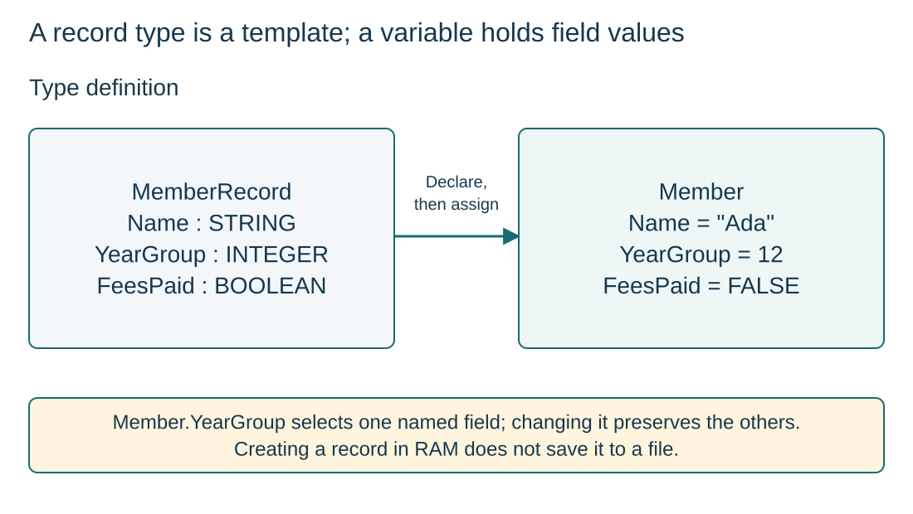

Define a record type and declare a variable
Visual overview
A record type is a template; a variable holds field values

Visual transcript
- MemberRecord defines Name as STRING, YearGroup as INTEGER and FeesPaid as BOOLEAN.
- DECLARE Member : MemberRecord creates one variable. Assigning field values is a separate step.
- The illustrated values Ada, 12 and FALSE are explicitly assigned example values, not declaration defaults.
One item with related fields
A record groups related fields, potentially of different data types, under one identifier. Each field has a name and its own type. A record for one member can therefore hold a STRING name, an INTEGER year group and a BOOLEAN payment state without losing their different meanings.
Define the structure before creating an instance
TYPE MemberRecord introduces the record definition and ENDTYPE closes it. The DECLARE statements inside define its fields. DECLARE Member : MemberRecord then creates a variable of that type; defining the type alone does not create a member or supply values for its fields.
Read the declaration at three levels
| Expression | What it identifies | Permitted operation |
|---|---|---|
| MemberRecord | A reusable type definition | Use it as a type in DECLARE |
| Member | One complete record variable | Access its fields; assign a compatible record |
| Member.YearGroup | One INTEGER field | Input or assign an INTEGER; use it in arithmetic |
Choose grouping by meaning
The fields may have different types; they do not have to be different. A record with two STRING fields is still a record because those fields have distinct names and roles. An array instead applies one element type to its indexed positions.
Connect the term to its context
A database row is also often called a record. Here TYPE describes a record value in a program. It does not create a database table or a persistent file. Defining MemberRecord once allows First and Second to hold two different members.
Core explanation · Exam essentials
- A record groups named fields under one identifier; each field has its own declared type.
- TYPE … ENDTYPE defines the record type; DECLARE creates a variable of that type.